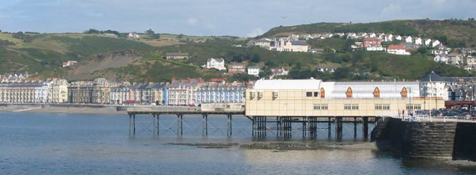

|
© 2021 Festival Art and Books. All rights reserved.  The history of Aberystwyth, the town nearest the Festival of the Shire The region was settled in very early times. There is evidence that during the Mesolithic Age the area of Tan-y-Bwlch at the foot of Pen Dinas was utilised as a flint knapping floor for hunter gatherers to make their Stone Age weapons from the quantities of surface flint nodules that were deposited as the ice retreated after the Ice Age. In the Bronze and Iron Ages, there was settlement in the area. There are the remains of a Celtic fortress on 'Dinas Maelor', a hill in Penparcau which overlooks Aberystwyth. This suggests that the site was inhabited before 700 BC, On a hill south of the existing town, across the River Ystwyth, there are the remains of a medieval ringfort which is believed to be the castle from which Princess Nest was abducted.
Written history in Aberystwyth can be dated from the building of a fortress in 1109 by Gilbert Fitz Richard, the grandfather of Richard de Clare, known as Strongbow, the Cambro- Norman lord notable for his leading role in the Norman invasion of Ireland. Gilbert Fitz Richard was granted lands and the lordship of Cardigan by Henry the First, and this included Cardigan Castle.The fortress built in Aberystwyth was located around a mile and a half south of the present town, on a hill over the south bank of the Ystwyth River. Edward the First (Longshanks). replaced Strongbow's castle in 1277, after its destruction by the Welsh. He ordered that the castle be built in a different location, at the current Castle Hill, the high point of the town. Between the years 1404 and 1408 Aberystwyth Castle was in the hands of Owain Glyndwr, but finally was surrendered to Prince Harry (the future King Henry the Fifth of England. Amazingly, as early as the 14th century, the concentric fortress began to decay. By 1343, large portions of the main gateway and drawbridges, and the outer bailey were falling down. The closeness of the castle to the pounding sea causing much of the decay. During the Civil War, the castle became a victim of Oliver Cromwell's ruthless policy of slighting because the garrison sided with the king, Charles I. Most of the castle stone was pilfered by locals to build their homes. Thereafter, the town was incorporated under the title of Ville de Lampadarn (the ancient name of the place being Llanbadarn Gaerog, or the fortified Llanbadarn. It is so called in a Royal Charter granted by Henry the Eighth but, by the time of Elizabeth the First, the town was invariably named Aberystwyth in all documents. In 1649, the Parliamentarian forces razed the castlle, so that its ruins are now few, though portions of three towers do exist. In 1988, an excavation within the castle area revealed a complete male skeleton, deliberately buried. Rarely surviving in Wales' acidic soil, this skeleton was probably preserved by the addition of lime from the collapsed building. Affectionately known as "Charlie", he probably dates from the time of the English Civil War, probably dying during the Parliamentarian siege and is now housed in the Ceredigion Museum in the town. His image is featured in one of nine mosaics created to decorate the castle's walls. In the Nineteenth century, the Cambrian Railway line from Machynlleth was built and it reached Aberystwyth in the 1860s, closely followed by rail links to Carmarthen, which resulted in the construction of the town's impressive railway station. The Cambrian line opened on Good Friday 1869, the same day that the new 292 metres (958 ft) Royal Pier opened, attracting 7,000 visitors to its opening. The railway's arrival in Aberystwyth gave rise to something of a Victorian tourist boom and the town was once even billed as the "Biarritz of Wales” . During this time a number of hotels and fine townhouses were built including the Queens Hotel. One of the largest of these hotels "The Castle Hotel" was never completed as a hotel and was sold cheaply to the Welsh National University Committee, a group of people dedicated to the creation of a Welsh University. The University College of Wales (later to become Aberystwyth University) was founded in 1872 in this very building. In more modrn times on the night of Friday January 14, 1938 a storm with estimated wind speeds of up to 90 mph (140 km/h) struck the town. Most of the promenade was destroyed, along with 200 feet (61 m) of the pier. Many properties on the seafront were damaged, with every property from the King's Hall north affected, those on Victoria Terrace having suffered the greatest damage. Work commenced on a protective coffer dam to prevent similar destruction, ans it was completed in 1940. Aberystwyth hosted the National Eisteddfod in 1865, 1916, 1952 and 1992.
|
|